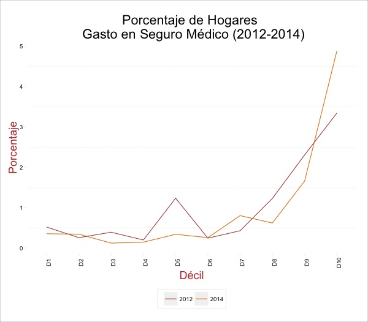
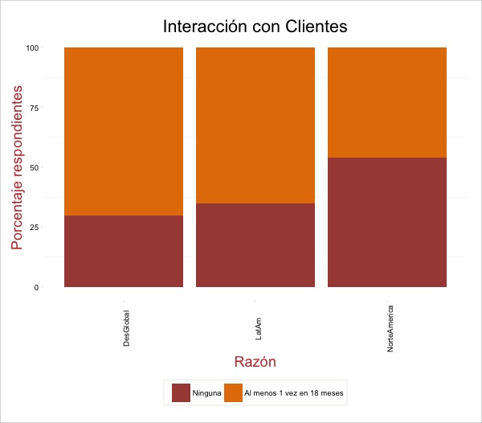
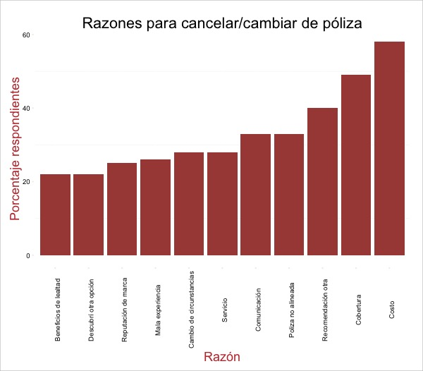

Propósito
De acuerdo con el plan estrategico de Aseguradora Patrimonial Vida de “incursionar en el mercado de Seguros Individuales mediante el desarrollo de nuevos productos”, este estudio preliminar pretende iniciar el proceso de:
- Descubrir y definir, a grandes razgos, la estrategia de innovación.
- Definir nichos de potenciales clientes.
- Identificar el tipo de modelo para segmentar, en base a una definición, a potenciales clientes y su empate con la estrategia general de innovación.
- Trazar el giro conceptual de oferta de productos para esos potenciales clientes.
Mercado Actual
Como exploración inicial, analizamos el gasto general de los hogares en México, por décil de ingreso. Los datos provienen de los tabulados básicos de la ENIGH (2014 y 2012) (“Instituto Nacional de Estadística y Geografía,” 2015) [1].
Observamos que la mayoría (68.84%) de los hogares con seguros médicos [2] están distribuidos en los déciles IX y X, es decir el 20% de la población con mayores ingresos. Aún así, en el décil más alto, solamente el 4.88% de los hogares reporta un gasto en el rubro de seguros médicos, razón por la cuál diversos analistas (missing reference) anuncian buenos prospectos de crecimiento para el futuro.

En forma tabular (datos del 2014):
| Decil | Hogares con Gasto | Porcentaje Hogares | Porcentaje Mercado |
|---|---|---|---|
| I | 11097 | 0.35 | 3.69 |
| II | 10791 | 0.34 | 3.59 |
| III | 3793 | 0.12 | 1.26 |
| IV | 4517 | 0.14 | 1.50 |
| V | 10704 | 0.34 | 3.56 |
| VI | 8083 | 0.26 | 2.69 |
| VII | 25363 | 0.80 | 8.43 |
| VIII | 19527 | 0.62 | 6.49 |
| IX | 52498 | 1.66 | 17.45 |
| X | 154559 | 4.88 | 51.36 |
En cuánto a gasto, la composición es todavía más marcada en el pico de la pirámide: aproximadamente 78% del mercado, por gasto, se encuentra concentrado en el último décil. Este, a su vez, representa poco más de medio punto porcentual del gasto total anual del décil.
| Decil | Gasto en Miles | Porcentaje Gasto | Porcentaje Mercado |
|---|---|---|---|
| I | 3927.47 | 0.02 | 0.19 |
| II | 5204.91 | 0.01 | 0.25 |
| III | 286.17 | 0.00 | 0.01 |
| IV | 2797.21 | 0.01 | 0.13 |
| V | 5945.15 | 0.01 | 0.29 |
| VI | 9948.08 | 0.01 | 0.48 |
| VII | 147865.74 | 0.19 | 7.12 |
| VIII | 46396.82 | 0.05 | 2.24 |
| IX | 227362.18 | 0.18 | 10.95 |
| X | 1626135.78 | 0.63 | 78.34 |
El gasto promedio en los últimos 10 deciles se redondea a: $10,521 pesos (décil X) por hogar, $4,330 (décil IX) y $2,376 (décil VIII). Claramente, se tratan de datos obtenidos mediante una encuesta con poco diseño para capturar el gasto en este mercado, pero aún así podemos intuir que el décil X pagaría poco más del doble por prima que un escalón abajo en la pirámide.
Comparando cifras de la misma encuesta en el 2012, observamos un incremento sustancial en el porcentaje de hogares pagando seguros en el espectro más alto (10% con más ingresos). El porcentaje en los déciles más abajo (VIII y IX) cae durante el mismo periodo.
Hogares con gasto por décil (datos 2012):
| Decil | Hogares con Gasto | Porcentaje Hogares | Porcentaje Mercado |
|---|---|---|---|
| I | 16284 | 0.52 | 5.09 |
| II | 7980 | 0.25 | 2.50 |
| III | 12274 | 0.39 | 3.84 |
| IV | 6227 | 0.20 | 1.95 |
| V | 38903 | 1.23 | 12.17 |
| VI | 7618 | 0.24 | 2.38 |
| VII | 13455 | 0.43 | 4.21 |
| VIII | 38698 | 1.23 | 12.10 |
| IX | 72780 | 2.31 | 22.76 |
| X | 105522 | 3.34 | 33.00 |
La comparativa de ambos periodos se puede observar mejor gráficamente:

Observamos la mismo información en forma tabular:
| Decil | Porcentaje Hogares (2012) | Porcentaje Hogares (2014) |
|---|---|---|
| I | 0.517 | 0.351 |
| II | 0.254 | 0.341 |
| III | 0.389 | 0.119 |
| IV | 0.197 | 0.142 |
| V | 1.232 | 0.338 |
| VI | 0.241 | 0.255 |
| VII | 0.426 | 0.801 |
| VIII | 1.226 | 0.617 |
| IX | 2.306 | 1.657 |
| X | 3.343 | 4.881 |
Con datos de la Asociación Mexicana de Industria de Seguros, podemos calcular, a manera aproximada el tamaño de mercado (en términos de prima emitida) en el último décil en 28 mil 661 millones de pesos, seguido de 8 mil 326 millones en el décil IX [3].
Se puede ver la metodología completa aquí
Tendencias Generales
~ | Mercado
El mercado de seguros, a nivel mundial, se encuentra inmerso en dos principales riesgos:
-
Riesgos regulatorios (una constante casi universal)
-
Disrupción innovadora por parte de:
-
Firmas de tecnología, que cuentan con mucha información y plataformas naturales en dónde ofrecer estos servicios, y
-
Pequeños competidores de nicho, que atienden cada vez a mercados más especializados.
-
Las grandes aseguradoras se han tardado, pero parecen estar reaccionando.
-
De las 129 aseguradoras más grandes del mundo con importantes planes de innovar en el corto plazo, 46% están basando su estrategia en: “desarrollar productos y servicios para nuevos clientes y segmentos de clientes” (missing reference)
-
La punta de la lanza de esta innovación está en países desarrollados, en dónde hay un mercado más maduro (en países como México, la penetración todavía es bastante baja) y los pequeños tienen más oportunidades de ganar por el uso más extensivo del internet para compras.
In the U.S., life insurance companies have traditionally paid little attention to market segmentation, but there is clearly an opportunity for a low-cost, low-hassle provider to grab considerable share of wallet among consumers, especially ones under 40.
(missing reference) -
El enfoque tiende a ser aquellos clientes cuyas necesidades todavía no se han satisfacido con los productos actuales.
Consumidores
Los factores constantes, (tanto en encuestas independientes como en estudios académicos) de lo que cada vez buscan más los cliente de seguros son:
-
Mayor comunicación entre la aseguradora y el cliente. En un mundo constantemente “en línea”, los consumidores se han acostumbrado a obtener respuestas más en línea con su disponibilidad de tiempo:
If your airline can tell you exactly where your bag is throughout a series of overseas transfers, it stands to reason that your insurance company should be able to tell you where your claim is if your house has been flooded. And if you can communicate with your bank over Facebook, you will also likely expect to be able to talk to an insurer through the same channel.
(missing reference)
En una encuesta realizada por Ernest & Young a 24 mil usuarios de seguros [4] durante el 2014, todos de manera global (pero más marcado en América Látina) dijeron querer más comunicación con sus aseguradoras sin incluir la razón (dudas generales, promociones o cambios de póliza).
Como se observa en la siguiente gráfica, mientras menos de 40% de los respondientes aseguran haber tenido comunicación en más de una ocasión durante un año con su aseguradora para realizar cambios en la poliza, casi 65% dijo que su modo preferido sería en al menos esa frecuencia. Los consumidores se muestran con alzas en todas las razones (es decir, quieren más comunicación de la que están obteniendo).

A decir, esto puede ser un efecto natural de las encuestas: más siempre es mejor en los ojos del consumidor. Pero los indicadores tan generalizados hablan de una falta de seguimiento a sus clientes por parte de las aseguradoras.
Este efecto es particularmente notorio en Norte América (Estados Unidos y Canadá), en dónde la interacción todavía es menor que en países desarrollados: aproximadamente la mitad de los asegurados reportaron no tener interacción con su agente en los últimos 18 meses. En América Latina, la proporción baja a menos de 30% y en países en vías de desarrollo aún más. El hecho de que los clientes estén reportado que quieren más communicación en todas las regiones sugiere que 18 meses es aún un horizonte grande de tiempo.

-
Otro factor importante es la sencillez en los productos. Aún y cuando comunicarse sea importante, el cliente considera más importante entender el producto. En este sentido, incluso la forma de empaquetar y presentar precios importa considerablemente al momento de vender (5).
-
Ambos factores previos tienen que ver con la oferta de marketing de la aseguradora y resultan ser muy importantes. Sin embargo, el consumidor no ha dejado atras otros aspectos más “racionales” de su cálculo.
De acuerdo con (missing reference), la razón más importante por la que personas se cambian de poliza en América Latina continua siendo el costo.

- Los clientes individuales, en resumen, quieren productos más sencillos, mejor precio y canales de comunicación más cómodos y profundos. Es decir, como sucede en industrias como el retail, quieren ser parte de una estrategia “omni-canal”
En este mismo sentido, (missing reference) sugiere:
Those that hope to break the mold will want to look at less obvious sectors – such as retail or the airline sector – to find new sources of inspiration.
Productos
- La mayoría de la innovación actualmente está generandóse en el servicio de productos ya generalmente existentes, pero en su formato “en-línea”.
Por ejemplo, en beaglestreet.com puedes comprar un producto en 10 minutos. Esta empresa (fundada en el 2012) ya tiene el 8% del mercado inglés. En este sitio resulta fácil consultar guías y agregar productos adicionales.
-
Partnerships con empresas parecidas (hospitales, farmacias, vendors de información de compras) también son una fuente importante de innovación a través de la cadena. En general, lo que estos partnerships pretenden es obtener información de primera fuenta para poder ofrecer ellos o a traves de un tercer un producto “especializado” (que generalmente es solo una tasa menor a la tasa retail) a los miembros obtenidos por ese lado [6].
-
Hay una tendencia, entre todas las aseguradoras a mejorar la oferta de productos enfocados a segmentos específicos.
AQUI ME QUEDE
-
Como es de esperarse, numerosos estudios encuentran una relación positiva entre etapas de vida y la demanda por seguros, particularmente casarse, tener un primer hijo o sufrir del primer desempleo 7. En este sentido, identificar estas etapas de vida o vender productos relacionados puede ser una importante área de oportunidad.
- Tanto estudios como datos oficiales muestran una relación estrecha entre nivel de ingreso y demanda por seguros. En general, se esperaría una tendencia más marcada en los seguros de vida.
Determinantes de demanda
Los factores que influyen en la demanda por seguros de vida han sido en enfoque de literatura económica por muchos años 8, aunque se ha dado en terminos generales (a nivel macro) o por países específicos.
De acuerdo con 29 estudios de diferentes países y circunstancias, el ingreso resulta como la variable más explicativa a través de todos los escenarios: en 13 de 15 estudios mostró una relación positiva. Seguida estan los bienes netos, otra medición de riqueza, que son significativamente positivos en 9 de 12 estudios. La tasa de dependencia, definida como personas proveedoras en el hogar sobre dependientes directos mantiene una relación positiva con la demanda por seguros de vida en 6 de 9 estudios.
| Variable | Positiva | Negativa | Sin_efecto |
|---|---|---|---|
| Ingreso | 13 | 1 | 1 |
| Ingreso_hogar | 1 | 0 | 0 |
| Bienes_netos | 9 | 1 | 2 |
| Precio | 0 | 2 | 0 |
| Inflación | 2 | 1 | 1 |
| Precios_esperados | 1 | 1 | 0 |
| Seguridad_social | 2 | 3 | 1 |
| Edad | 3 | 4 | 6 |
| Educación | 6 | 3 | 0 |
| Tasa_dependencia | 6 | 2 | 1 |
| Genero | 1 | 0 | 0 |
| Estatus_matrimonial | 0 | 2 | 2 |
| Poblacion_local | 1 | 0 | 0 |
| Precios_esperados_personal | 0 | 1 | 0 |
Otra vía para identificar clientes potenciales es a través de compras de “tickets grandes”, como propuesto por Yoon (missing reference). De acuerdo con estudios de la consultora, los clientes que compran desproporcionadamente cosas grandes pero no relacionadas pueden ser superconsumidores en otras categorias grandes.
Ellos encontraron una relación importante entre seguros de vida y generadores de emergencia de energía eléctrica, otro producto caro pero que también requiere de planear en avance. Para este caso, obtener información cruzada por medio de vendors de información, ayudaría a identificar estas relaciones.
La expectativa de vida también se ha asociado directamente a mayor demanda por productos de seguros de vida, aunque esto puede ser en función de mayor ingreso (driver que influye casualmente en ambos) (missing reference)
Para el caso mexicano, se espera un incremento sustancial en la población con más de 65 años, quienes proporcionalmente adquiren más seguros de vida. Las mujeres, que particularmente tienden a comprar más, agregarán la mayoría de los clientes nuevos de acuerdo con Business Monitor (missing reference)
Encuestas y overviews
Pricing
- Para el caso mexicano, esperaríamos que incluso los más “experimentados” estén en un nivel de conocimiento menor al de un suizo “no experimentado”.
Productos propuestos para exploración adicional
En vista a lo anterior, se proponen una serie de vías de exploración adicional para crear un producto (o modelo) en vista de alguna escogida. Estos productos se pueden resumir en:
- Front-loading con beneficios
- One-stop shops
- Seguros como fondos corporativos
- Microseguros
- Life-settlement como seguros de desempleo
- Seguros con tasas continuas
- Seguros con componentes de ahorro
A continuación una pequeña exploración de cada uno.
Front-loading con beneficios
Como es bien conocido, la mayoría de las polizas de seguro de vida hacen uso del front-loading:
Front-loading implies that policyholders of long-term life insurance policies, especially those with impaired health, often have locked in premiums that are much more favorable than what they could obtain in the spotmarket.
(missing reference)
Sin embargo, como menciona (missing reference) los clientes con contratos en “albercas” de riesgo, tienden a cambiarse por etapa de vida, dependiendo de su valoración de riesgo individual.
El cliente en el tiempo cero (edad corta) tiene una valoración de su riesgo “r” que es parecida a todos los demás clientes en esa misma etapa.
A medida que el cliente obtiene más información sobre su estado de salud (edad adulta), el cliente tiene mejor valoración de su riesgo. La diferencia entre su valor y lo pagado en el seguro puede ser negativa (el seguro paga más de lo que el considera “justo”) o positiva (el seguro paga menos).
Cuando la diferencia es positiva, el cliente tiende a buscar otro asegurador (volviendose el seguro más semejante a un producto “commodity”).

Tras “aprender” su estado de salud en un tiempo posterior (el tiempo dos en un mundo de dos tiempos), el consumidor tiene tres opciones: (1) continuar con su contrato, (2) buscar otro contrato, (3) quedarse sin contrato alguno.
Si el consumidor tiene un perfil de riesgo menor al actuarialmente justo en su contrato, el efecto de que escoja la segunda opción es doblemente perjudicial para la aseguradora:
- El riesgo promedio del portafolio incrementa (solo se quedan los que, según ellos, tienen riesgo alto)
- Se pierden clientes a aseguradoras con precios menores (generalmente también las más grandes)
Para evitar esto, (missing reference) indica que se debe crear una barrera que dificulta el proceso de salirse de la poliza o en su defecto integrar este conocimiento de manera apriori a la decisión de precio de poliza. Si podemos discernir a una corta etapa al cliente cuyo riesgo incrementará a aquel que se mantendrá bajo de manera más fina, podemos ofrecer polizas más baratas.
En este sentido, algunas aseguradoras ya incorporan análiticas de perfiles de redes sociales para identificar a jóvenes cuyo estilo de vida sea propenso a generar hábitos con mayor riesgo en un futuro.
ndeed, GNP revealed that more than half of the firm’s individual life insurance portfolio consisted of products that had a savings component, of which 68% comprised of a formalised savings plan.
One-stop shops
En línea con lo previo, un “one-stop shop” (especie de tienda de conveniencia) para productos de seguros apela a consumidores “…” (missing reference).
En este sentido, se consideran especialmente intuitivas las tasas o contratos de grupos. Una de las ventajas de agrupar se traducen a los
group markets may be more prevalentbecause of their ability to deal with informational asymmetries.
No obstante, el problema con las tasas de grupo es que generalmente se segmentan en base
Seguros como fondos corporativos
In the United States business environment, corporate-owned lifeinsurance (COLI) has emerged as a popular corporate finance tool. Companies often purchase institutionally priced or retail-priced life insurance policies on their executives and/or owners, and maintain these policies as corporate assets. In essence, these are key person policies targeted at providing financing for thecompany's long-term obligations.
(missing reference)
Microseguros
Productos enfocados a segmentos tradicionalmente excluidos de la cadena financiera, pero no necesariamente en pobreza extrema.
-
Productos baratos, con pocos beneficios y componentes de cobranza mixtos.
-
De acuerdo con los datos del CONEVAL, un mercado de aproximadamente 31.5 millones de personas en el 2014, concentrada en terminos de población en los estados de México (60.6% de la población), Distrito Federal (46.2%) y Veracruz (68.45%).
-
Países cn experiencia en estos productos: Brasil, Nigería, Ghana.
Life-settlement como seguros de desempleo
Then there is the “longevity paradox.” People are living longer now — a lot longer, in fact. [...] Fears of an early death have now been replaced by fears of outliving ones’ resources. This fear has grown in recent years with the steady disappearance of defined-benefit pension plans.
(missing reference)
Vantis Life (formerly Savings Bank Life Insurance or SBLI) uses a simple application incorporating predictive analytics to support its “EZ Life” products — basic term life insurance with policies in the $100,000 to $250,000 range. Predictive analytics anticipate mortality and longevity rates and help Vantis Life underwrite the policies without the medical examination and tests usually associated with life policies.
(missing reference)
ndeed, GNP revealed that more than half of the firm’s individual life insurance portfolio consisted of products that had a savings component, of which 68% comprised of a formalised savings plan.
Seguros con tasas variables
Seguros con Ahorro
Fuentes
- Millo, G., & Carmeci, G. (2015). A Subregional Panel Data Analysis of Life Insurance Consumption in Italy. Journal Of Risk and Insurance, 340(2), n/a–n/a. doi:10.1111/jori.12023
- Huber, C., & Schmeiser, H. (2015). HOW DOES PRICE PRESENTATION INFLUENCE CONSUMER CHOICE? THE CASE OF LIFE INSURANCE PRODUCTS, 431(2), 401–431. doi:10.1111/j.1539-6975.2013.12026.x
- Bohnert, A., Gatzert, N., & Jorgensen, P. L. (2015). On the management of life insurance company risk by strategic choice of product mix, investment strategy and surplus appropriation schemes. Insurance: Mathematics And Economics, 60, 83–97. doi:10.1016/j.insmatheco.2014.11.003
- Larson, S. J. (2015). Considering Time in a Life Insurance Needs Analysis, (September), 62–72.
- Katt, P. C. (2015). History of Cash Value Life Insurance and Implications for Existing Policies, (August).
- Parrish, S. (2014). IRM Permanent Life Insurance in Financial Planning , (October), 30–33.
- Tool, C. F. (2014). Insurance & Risk Management, (March), 34–37.
- Hendren, N. (2013). Private Information and Insurance Rejections. Econometrica, 81(5), 1713–1762. doi:10.3982/ECTA10931
- Sen, S., & Madheswaran, S. (2013). Regional determinants of life insurance consumption: Evidence from selected Asian economies. Asian-Pacific Economic Literature, 27(2), 86–103. doi:10.1111/apel.12024
- Silva, K. R., & Afonso, L. E. (2013). A Study on life microinsurance in Brazil. Brazilian Business Review (English Edition), 10(3), 130–155. doi:10.15728/bbr.2013.10.3.6
- Wu, X., & Gan, L. (2013). Multiple Dimensions of Private Information in Life Insurance Markets. Retrieved from http://www.nber.org/papers/w19629
- Lorson, J., & Wagner, J. (2013). Sales Efficiency in Life Insurance: On Growth and Profitability in the German Market. I.VW-HSG Working Paper, (2009). doi:10.1057/gpp.2013.35
- Gatzert, N., Holzmüller, I., & Schmeiser, H. (2012). Creating Customer Value in Participating Life Insurance. Journal Of Risk and Insurance, 79(3), 645–670. doi:10.1111/j.1539-6975.2011.01453.x
- Sliwinski, A., Michalski, T., & Roszkiewicz, M. (2012). Demand for Life Insurance—An Empirical Analysis in the Case of Poland. The Geneva Papers On Risk and Insurance Issues and Practice, 38(1), 62–87. doi:10.1057/gpp.2012.21
- Liebertberg, A. P., Carson, J. M., & Dumm, R. E. (2012). a Dynamic Analysis of E Demand for Life Insurance, 79(3), 619–644. doi:10.1111/j.l539-6975.2011.01454.x
- Hong, J. H., & Rı́os-Rull José-Vı́ctor. (2012). Life Insurance and Household Consumption. American Economic Review, 102(7), 3701–3730. doi:10.1257/aer.102.7.3701
- Giesbert, L., Steiner, S., & Bendig, M. (2011). Participation in Micro Life Insurance and the Use of Other Financial Services in Ghana. Journal Of Risk and Insurance, 78(1), 7–35. doi:10.1111/j.1539-6975.2010.01405.x
- Paper, W., Econ, B., & Papers, D. (2011). The Effect of Secondary Markets on Equity-Linked Life Insurance with Surrender Guarantees, 81(4), 943–968. doi:10.1111/j.1539-6975.2013.12003.x
- Sinha, R. P. (2010). Revenue Maximizing Efficiency of Life Insurance Companies : Some Indian Evidence.
- Ibiwoye, a, Ideji, J., & Oke, B. (2010). the Determinants of Life Insurance Consumption in Nigeria: a Co-Intergration Approach. INTERNATIONAL JOURNAL Of ACADEMIC RESEARCH, 2(4), 351–359. Retrieved from http://scholar.google.com/scholar?hl=en&btnG=Search&q=intitle:THE+DETERMINANTS+OF+LIFE+INSURANCE+CONSUMPTION+IN+NIGERIA:+A+CO-INTERGRATION+APPROACH#0
- Fang, H., & Kung, E. (2010). How does life settlement affect the primary life insurance market? Retrieved from http://www.nber.org/papers/w15761
- Gatzert, N. (2010). The secondary market for life insurance in the United Kingdom, Germany, and the United States: Comparison and overview. Risk Management And Insurance Review, 13(2), 279–301. doi:10.1111/j.1540-6296.2010.01187.x
- Harris, R. L. (2009). Life Insurance and Wealth A Perfect Combination for the Ultra-Aßuent, 114–119.
- Johnson, R. A. Y. C. (2008). Funding in the Life Space, 62–70.
- Baldwin, B. G. (2008). Life Insurance Considerations in a Rapidly Changing World, (August).
- Khurana, S. (2008). Customer Preferences in Life Insurance Industry in India, VI(3), 60–69.
- Athma, P., & Kumar, J. R. (2007). An Explorative Study of Life Insurance Purchase Decision Making : Influence of Product and Non-Product Factors, IV(4), 40–49.
- Lenten, L. J. a., & Rulli, D. N. (2006). A Time-Series Analysis of the Demand for Life Insurance Companies in Australia: An Unobserved Components Approach. Australian Journal Of Management, 31(1), 41–66. doi:10.1177/031289620603100104
- Cowley, A., & Cummins, J. D. (2005). Life Insurance Assets, 72(2), 193–226.
- Pauly, M. V., Withers, K. H., Hershey, J. C., Asch, D. a, Subramanian-viswanathan, K., Lemaire, J., & John, C. (2003). Price Elasticity of Demand for Term Life Insurance and Adverse Selection, 1–44. Retrieved from http://www.nber.org/papers/w9925
- Hendel, I., & Lizzeri, A. (2003). The Role of Commitment in Dynamic Contracts: Evidence from Life Insurance. The Quarterly Journal Of Economics, 118(1), 299–328. doi:10.1162/00335530360535216
- Berry, R. J. [S. (2002). The Future of Life. Jrsm, 95(10), 520–521. doi:10.1258/jrsm.95.10.520
- Brown, J. R. (2001). Are the Elderly Really Over-Annuitized? New Evidence on Life Insurance and Bequests. Themes in the Economics of Aging (pp. 91–126).
- Brown, J. R., & Poterba, J. M. (2000). Joint Life Annuities and Annuity Demand by Married Couples. The Journal Of Risk and Uncertainty, 67(4), 527–554. doi:10.2307/253849
- Auerbach, A. J., & Kotlikoff, L. J. (1989). HOW RATIONAL IS THE PURCHASE OF LIFE INSURANCE?, (3063).
- Author, C., Lintner, J., Piper, T. R., Fortune, P., Lintner, J., & Fortune, P. (1977). Volume Publisher : NBER Forward Commitment Decisions of Life Insurance Companies for Investments in Bonds and Mortgages, 4(5), 1–50.
- O’leary, J. (1960). Forward Investment Commitments of Life Insurance Companies Forward Investment Commitments of Life Insurance Companies, 325–350.
Notas
-
Expandidos por factores de estimaciones CONAPO. ↩
-
La categorización de seguro médico segun la Clasificación Nacional de Gasto incluye los rubros J071 (Cuotas a compañías de seguros) y N009, más no es exhaustivo. ↩
-
El cálculo se obtiene multiplicando el total de primas emitidas de todo el mercado a diciembre 2014 por la participación de gasto de cada décil en el gasto total del rubro de clasificación “grande” del ENIGH, que incluye los rubros J071 (Cuotas a compañías de seguros) y N009. Sin embargo, este no se encuentra ponderado por el peso relativo de cada subsector. ↩
-
Seguros de vida y de autos. ↩
-
De acuerdo con un experimento elaborado en Suiza (Huber & Schmeiser, 2015) entre jovenes de 25 a 35 años, los participantes más experimentados en la compra de instrumentos financieros preferían productos empaquetados, mientras que los menos experimentados no veían diferencia entre ambas propuestas. ↩
-
Estos partnerships han sido generalmente expuestos en (Baldwin, 2008; Liebertberg, Carson, & Dumm, 2012; Athma & Kumar, 2007) ↩
-
(missing reference) y (missing reference) repasan estudios de manera considerable. ↩
-
Diferentes estudios encuentran relación nula pero en el agregado. Datos panel en (missing reference) muestran mejor el panorama. ↩